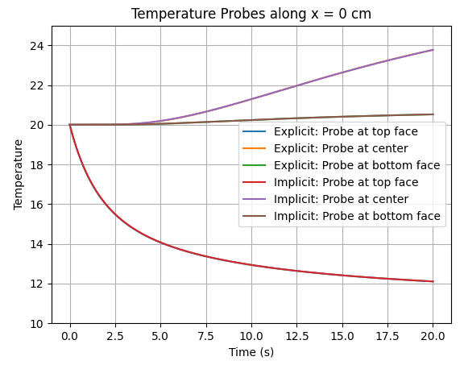
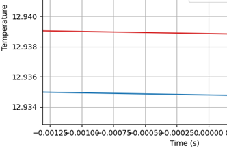
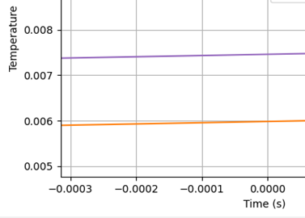
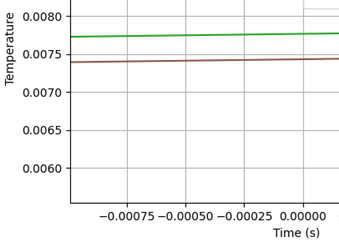

This is the discretization of the 2D unsteady heat conduction with variable thermal conductivity. The problem below shows a composite square block of dimensions 10cm x 10cm, originally at a uniform temperature at 20C. The problem has the top boundary at 10C, left and right boundaries at 35C, and the bottom boundary at 20C. The upper section is made of stainless steel, while the rest of the material is tested with various other materials.
This first video is using Implicit Euler and Guass Seidel with brass on a 50x50 grid. This simulation is stable, as the temperatures converge, and the temperature distribution behaves as expected.
This second video is using Implicit Euler and Guass Seidel with beryllium on a 50x50 grid. This simulation is stable, as the temperatures converge, and the temperature distribution behaves as expected, however, there is a heat generation occuring in the center that I'm not sure where it comes from. The main difference is that beryllium heats up quicker.
This third video is using Implicit Euler and Guass Seidel with gold on a 50x50 grid. This simulation is not, as the temperatures diverge pretty early on. It seems that certain values, like density, specific heat capacity, and thermal conductivity make this code diverge.
To show the difference between Implicit Euler and Explicit Euler, the figure below plots the temperature probes in the vertical center line. The difference is extremely small: on the scale of 1e-3 to 1e-4, as shown in figures 2-4.



